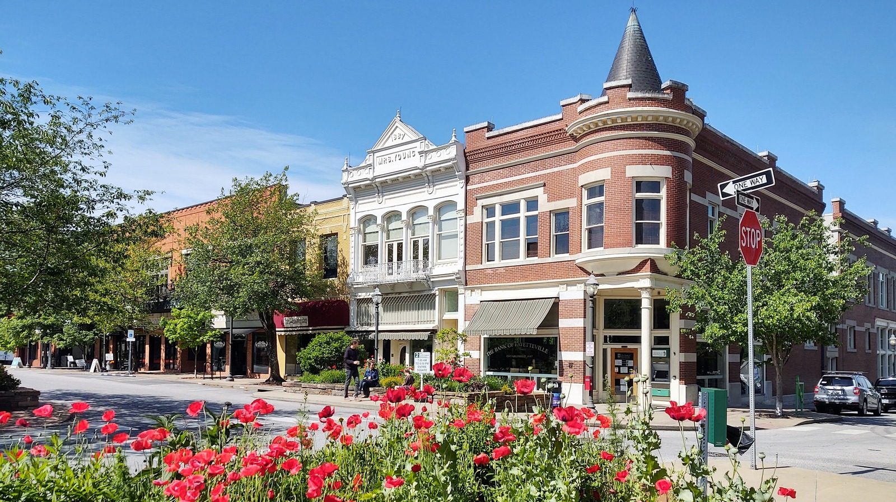

City Comparison
Fayetteville or Bentonville for retirement?
Thirty minutes apart in the same Ozark corridor, sharing an airport, a weather report and a tax code. What separates them is $112,000 on the house and two completely different temperaments.
Choose Fayetteville if the price decides it and you want a university town with a working square, trails inside the city limits and the state's top-ranked hospital in town. Choose Bentonville if Crystal Bridges, the restaurants and 130 miles of singletrack are worth $112,000 more on the house. What they share: the same airport at 6 of 10, the same spring tornado season, the same 0.56% property tax rate, and a car you will not be giving up in either.
Side by side, scored.
The shaded, checkmarked cell on each row is the stronger one. Ties and single-point gaps are left unmarked, and on this pairing that is most of the table.
| Metric | Fayetteville ARKANSAS | Bentonville ARKANSAS |
|---|---|---|
| Cost & money | ||
| Typical home value | $385,000 ✓ | $497,000 |
| Estimated retiree budget | $4,900–$6,100/mo ✓ | $5,600–$6,900/mo |
| Budget tier (1 = least expensive) | 1 of 5 ✓ | 2 of 5 |
| Property tax rate | 0.56% | 0.56% |
| Home insurance estimate | $3,733/yr | $3,733/yr |
| Our 10-dimension scores | ||
| D1 Airport access | 6/10 | 6/10 |
| D2 Budget | 8/10 ✓ | 6/10 |
| D3 Healthcare | 8/10 | 7/10 |
| D4 Climate resilience & insurance | 6/10 | 6/10 |
| D5 Tax friendliness | 7/10 | 7/10 |
| D6 Walkability | 6/10 | 5/10 |
| D7 Outdoor recreation | 8/10 | 8/10 |
| D8 Active wellness | 7/10 | 7/10 |
| D9 Safety | 7/10 | 8/10 |
| D10 Community & culture | 8/10 | 8/10 |
| Climate | ||
| Winters | Cold and real, with ice storms | Cold and real, with ice storms |
| January mean temperature | 36F | 36F |
| Annual snowfall | 11 in | 11 in |
| Annual sunshine | 60% of the year | 60% of the year |
| Summer heat severity (10 = worst) | 7/10, humid Ozark summers | 7/10, humid Ozark summers |
Scored 0–10 across every city on RetireMeHere; higher is better (except where noted). Checkmarks mark the stronger city in each row; ties and near-ties are left unmarked. Data: RetireMeHere city database, August 2026.
What they share: one corridor, one airport, one weather report
These two are thirty minutes apart on the same road, at opposite ends of the Northwest Arkansas corridor that runs from Fayetteville north through Springdale and Rogers to Bentonville. The consequences of that show up everywhere on the table. Both are served by Northwest Arkansas National in Highfill and both score 6 of 10 for airport access. Both pay an effective property tax rate of 0.56% and both carry a home insurance estimate of $3,733 a year. Both score 7 of 10 on tax friendliness, because Arkansas rules apply equally: no state tax on Social Security, a $6,000 exemption each on pension or IRA income from age 59 and a half, and a top state rate cut to 3.9% for 2026, down from 5.9% in 2022.
The weather report is the same report. January averages 36F in both, roughly 11 inches of snow falls in a normal year in both, and the sun is out about 60% of the time in both. Both score 8 of 10 for outdoor recreation and 8 of 10 for community and culture, and both are linked by the same Razorback Regional Greenway, forty-plus paved miles that begin in Fayetteville and run north through Bentonville. Six of the ten dimensions are dead level. This is not a comparison where the scores decide it for you.
Where the money differs: $112,000, and it does not come back
A typical Fayetteville home runs $385,000 against Bentonville's $497,000. That is a gap of $112,000 on the purchase, and unlike most pairings, nothing in the carrying costs reverses it. The property tax rate is identical at 0.56%, so the cheaper house simply carries the cheaper bill: about $2,156 a year in Fayetteville against about $2,783 in Bentonville, a difference of roughly $627. Home insurance is estimated at the same figure in both. There is no hidden correction waiting.
The monthly retiree estimates follow: $4,900 to $6,100 in Fayetteville against $5,600 to $6,900 in Bentonville, about $700 to $800 a month apart. That is also why they land in different budget tiers, 1 of 5 against 2 of 5, and it is the one dimension gap on this page that clears the two-point bar, budget 8 of 10 against 6. If you are selling into this market rather than buying with cash, the practical version is that the same equity buys noticeably more house in Fayetteville, or the same house with more left over.
One honest caveat on the Bentonville figure. Bella Vista, the 1960s planned community twelve minutes north of Bentonville, runs closer to $300,000 and was a retirement destination long before Bentonville's transformation. The $497,000 is the Bentonville citywide number, not the only way to live in that end of the corridor.
The biggest practical difference: a college town or a company town
This is the part the scores cannot show you, and it is what actually separates them. Fayetteville is a university town. The University of Arkansas has sat on the hill above downtown since 1871 and still sets the rhythm: an academic calendar, football Saturdays, a student rental market, and the Walton Arts Center booking touring Broadway and orchestras on Dickson Street. The Square below it is a working town square with a farmers market that has anchored it for decades, and the Washington-Willow Historic District three blocks east holds more than a hundred Queen Anne and Craftsman houses on the National Register. About 109,000 people live there, and it is Arkansas's second-largest city.
Bentonville is what happened when a small Ozark town became the headquarters of the largest retailer in the world and then spent a generation's worth of that money on itself. Walton's 5&10 opened on the courthouse square in 1950. Crystal Bridges Museum of American Art opened in 2011, designed by Moshe Safdie, free to all visitors, and the population has more than doubled since. The Momentary, its contemporary annex in a converted cheese plant, opened in 2020 and books touring acts on an outdoor amphitheater. The restaurant scene has drawn James Beard recognition across multiple recent years.
That history is the price gap. Bentonville costs $112,000 more because corporate relocation demand and a fifteen-year transformation put it there, and because what that money bought is genuinely unusual for a town this size. Fayetteville costs less because a college town's economics are different, not because it is a lesser place. The litmus test: if your ideal week involves a farmers market, a football Saturday and a touring orchestra, Fayetteville fits. If it involves a museum morning, a trail ride and a tasting menu, Bentonville does.
Each city's signature: Fayetteville's price and hospital, Bentonville's art and singletrack
Fayetteville's budget score of 8 of 10 against Bentonville's 6 is the only mark on the dimension table, and it is the whole financial argument in one number. Behind it sits the second Fayetteville advantage, which is a one-point edge rather than a mark: healthcare, 8 of 10 against 7. The reason is a street address. Washington Regional Medical Center is a 425-bed not-for-profit inside Fayetteville, ranked first in Arkansas by U.S. News, rated high performing in 13 adult procedures and conditions and four stars overall by CMS. From Bentonville it is a 35 minute drive, with Mercy Hospital Northwest Arkansas in Rogers about 15 minutes out as the nearer option. Same regional network, different distance to the biggest hospital in it.
Fayetteville also has the outdoors closer in than the tied 8 of 10 suggests. Mount Kessler rises 1,800 feet inside the city limits and carries about 13 miles of singletrack. Lake Fayetteville and Lake Sequoyah are city water. Devil's Den State Park is half an hour south. Walkability is 6 of 10 against Bentonville's 5, another near-tie, and in practice it means Dickson Street, the Square and the blocks around Wilson Park work on foot while very little else in either city does.
Bentonville's case is what the Walton money built. Crystal Bridges charges nothing for general admission and holds one of the more serious American art collections assembled in the last fifty years; the 21c Museum Hotel rotates contemporary exhibitions three blocks from the square. The trail network is the other half: more than 130 miles of purpose-built singletrack connecting directly to downtown, and IMBA Silver-level Ride Center status for the area. Safety is 8 of 10 against Fayetteville's 7, a near-tie worth reporting and not worth deciding on. What is worth deciding on is that Crystal Bridges is thirty minutes from Fayetteville too, and free, which makes it a regional asset rather than a reason to pay $112,000 more.
The honest shared downside: the storms, the airport, and the car
Both score 6 of 10 for climate resilience, and it is the same 6 for the same reason. Spring in the Ozarks brings tornado and severe-storm season, and winter brings ice storms that take down power lines and close roads for a day or two at a time. Neither city has a defining catastrophic peril of the hurricane or wildfire kind, but the severe-storm exposure is real in both and is the one weather risk here that has to be planned around rather than tolerated. Summers are humid, 7 of 10 on heat severity in both.
Both score 6 of 10 for airport access because they share the same airport. Northwest Arkansas National publishes 27 nonstop destinations across six airlines. That covers a good share of domestic travel and it is a genuinely useful regional airport, but anything international, and much of the West Coast, means connecting. Bentonville is marginally closer to it; neither is close enough for that to change the score.
And both need a car. Walkability is 6 of 10 and 5 of 10, which is to say a walkable core of a few blocks in each and driving for everything else. The Razorback Greenway is a real asset for cycling between the two, but it is recreation infrastructure that happens to be useful for errands, not a transit system. On healthcare, the shared caution is that serious specialty care in either city usually means a drive to Tulsa or Little Rock.
Read the full profile
Each city has its own detailed retirement profile with scores, neighborhoods, hospitals, and tradeoffs.

An Ozark college town scoring 8 of 10 on budget, with a 425-bed hospital ranked first in Arkansas, trails inside the city limits, and a $385,000 typical home.
Read the Fayetteville profile →A small Ozark town remade by Walton money: Crystal Bridges free to all visitors, more than 130 miles of singletrack, and a $497,000 typical home.
Read the Bentonville profile →Frequently asked
Is Fayetteville or Bentonville better for retirement?
It comes down to price and personality, because almost everything else is tied. Six of the ten dimensions score identically and only one clears a two-point gap: Fayetteville scores 8 of 10 on budget against Bentonville's 6. Both are served by XNA, both sit at 6 of 10 for airport access, both score 8 of 10 for outdoor recreation and 8 of 10 for community and culture, both pay the same 0.56% property tax rate, and both have the same January mean of 36F. Choose Fayetteville for the lower price and the college town, and Bentonville for Crystal Bridges and the trail network, but do not expect the scores to make the case for you.
Which is cheaper, Fayetteville or Bentonville AR?
Fayetteville, clearly. A typical Fayetteville home runs $385,000 against Bentonville's $497,000, a gap of $112,000. The monthly retiree estimate is $4,900 to $6,100 in Fayetteville against $5,600 to $6,900 in Bentonville, roughly $700 to $800 a month apart. They also land in different budget tiers, 1 of 5 against 2 of 5. The carrying costs do not claw any of it back: the property tax rate is identical at 0.56%, so the cheaper house also carries the cheaper tax bill, about $2,156 a year against about $2,783. Home insurance is estimated at the same $3,733 a year in both.
Which has better healthcare, Fayetteville or Bentonville?
Fayetteville, by a single point, 8 of 10 against 7. The reason is geography rather than quality: Washington Regional Medical Center is a 425-bed not-for-profit inside Fayetteville, ranked first in Arkansas by U.S. News and rated high performing in 13 adult procedures and conditions. From Bentonville, that hospital is a 35 minute drive, with Mercy Hospital Northwest Arkansas in Rogers about 15 minutes away as the nearer option. Both cities draw on the same regional network, and for both, serious specialty care usually means a drive to Tulsa or Little Rock.
Which is safer, Fayetteville or Bentonville?
Bentonville edges it, 8 of 10 to Fayetteville's 7. That is a one-point gap, which is a near-tie rather than a meaningful difference, and it is left unmarked on the comparison table for that reason. Both score in the upper range, and neither city's safety score is a reason to pick it over the other.
Do Fayetteville and Bentonville have the same weather and taxes?
Effectively yes, on both. They sit about thirty minutes apart in the same Ozark corridor and share a January mean of 36F, roughly 11 inches of annual snowfall, sunshine about 60% of the year, and the same humid summers at 7 of 10 for heat severity. Both are exposed to the same spring tornado and severe-storm season and both score 6 of 10 for climate resilience. On tax they are identical too, since Arkansas rules apply to both: no state tax on Social Security, a $6,000 exemption each on pension or IRA income from age 59 and a half, a top state rate of 3.9% for 2026, and the same 0.56% effective property tax rate. Both score 7 of 10 on tax friendliness.
More city matchups
Want a personalized match?